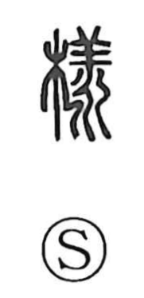

様

Kun: sama | On: yo
appearance ・ manner ・ form ・ honorific suffix
Explanation
様 abbreviates 樣, which combines 木, wood, with 羕 as its phonetic. 羕 concerns drifting water and the long, continuous courses traced by its movement.
The character probably names patterns resembling those watercourses represented on wood. Flowing lines provide a model that can be transferred to another surface, giving a form or design. From the pattern come the way something looks, its arrangement, and the manner in which it is made or done.
様 therefore serves for form, appearance, condition, and method, as in 様子 and 様式. Japanese sama extends to the state or unfolding of an event and also becomes a respectful title after a person's name. The underlying connection is the recognizable form in which something presents itself.